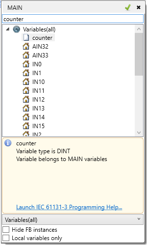

This applies to ST, LD and FBD programs.
When the “Select variable” command is chosen from the context menu, a popup dialog appears in which the user can select an existing variable to replace the variable in the current selection, or to create a new variable. Type the name of the variable into the edit box and, if the variable already exists in the current scope, it will be selected. Pressing the Enter key, or the small green check on the dialog will replace the variable with the selected one. If a variable with the typed name does not already exist, a prompt will appear for creating this variable, setting its type and group.
